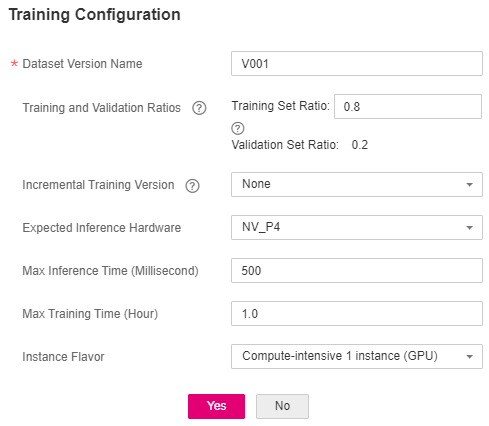

After labeling the images, perform auto training to obtain an appropriate model version.
Procedure
- On the ExeML page, click the name of the project that is successfully created. The Label Data tab page is displayed.
- On the Label Data tab page, click Train in the upper right corner. In the displayed Training Configuration dialog box, set related parameters. Table 1 describes the parameters.Figure 1 Setting training parameters
Table 1 Parameter description Parameter
Description
Default Value
Dataset Version
This version is the one when the dataset is published in Data Management. In an ExeML project, when a training job is started, the dataset is published as a version based on the previous data labeling.
The system automatically provides a version number. You can change it to the version number that you want.
Randomly provided by the system
Training and Validation Ratios
The labeled sample is randomly divided into a training set and a validation set. By default, the ratio for the training set is 0.8, and that for the validation set is 0.2. The usage field in the manifest file records the set type. The value ranges from 0 to 1.
0.8
Incremental Training Version
Select the version with the highest precision to perform training again. This accelerates model convergence and improves training precision.
None
Max. Training Duration (Minute)
If training is not completed within the maximum training duration, the model is saved and training stops. To prevent the model from exiting before convergence, set this parameter to a large value. The value ranges from 6 to 6000. You are advised to properly extend the training duration. Set the training duration to more than 1 hour for a training set with 2,000 images.
60
Training Preference
- performance_first: performance first. The training duration is short and the generated model is small.
- balance: balanced performance and precision
- accuracy_first: precision first. The training duration is long and the generated model is large.
balance
Instance Flavor
Select the resource specifications used for training. By default, the following specifications are supported:
- Compute-intensive 1 instance (GPU): This flavor is billed on a pay-per-use basis.
The compute flavors are for reference only. Obtain the flavors on the management console.
ExeML (GPU)
- After configuring training parameters, click Yes to start auto model training. The training takes a certain period of time. Wait until the training is complete. If you close or exit this page, the system still performs the training operation.
- On the Train Model tab page, wait until the training status changes from Running to Completed.
- View the training details, such as Accuracy, Evaluation Result, Training Parameters, and Classification Statistics. For details about the evaluation result parameters, see Table 2.
Table 2 Evaluation result parameters Parameter
Description
Recall
Fraction of correctly predicted samples over all samples predicted as a class. It shows the ability of a model to distinguish positive samples.
Precision
Fraction of correctly predicted samples over all samples predicted as a class. It shows the ability of a model to distinguish negative samples.
Accuracy
Fraction of correctly predicted samples over all samples. It shows the general ability of a model to recognize samples.
F1 Score
Harmonic average of the precision and recall of a model. It is used to evaluate the quality of a model. A high F1 score indicates a good model.

An ExeML project supports multiple rounds of training, and each round generates a version. For example, the first training version is V001 (xxx), and the next version is V002 (xxx). The trained models can be managed by training version. After the trained model meets your requirements, deploy the model as a service.